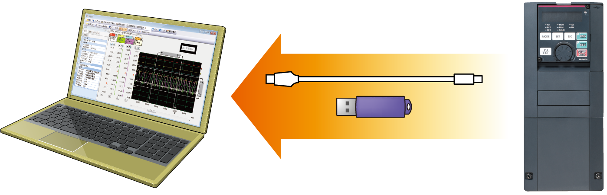

Inverters-FREQROL-F Series -FREQROL-F800- Security & Safety

Improved System Safety
Safety standards compliance 
Controls with safety functions can be easily performed.
The Safe Torque Off (STO) safety function is supported by the inverter. The FR-F800 inverter with the safety function complies with safety standards while incurring little expense.
- EN ISO 13849-1 PLd / Cat.3
- EN 61508, EN 61800-5-2 SIL2
- *1Safety communication is available between a safety programmable controller and a remote I/O module.
- *2One MC is required to shut off the power at an activation of the protective function.
Reliable and Secure Maintenance
Standard 24 VDC power supply for the control circuit
In addition to the existing power supply input terminals (R1 and S1) of the control circuit, 24 VDC input is equipped as standard.
The 24 VDC power supplied from outside can be fed to the control circuit locally.
The parameter setting and communication operation can be done without turning ON the main power.
Prevention of trouble with temperature monitoring
The inverter is equipped with an internal temperature sensor, which outputs a signal when the internal temperature is high.
This facilitates the detection of rises in temperature inside the inverter following cooling fan malfunction, or rises in the surrounding air temperature due to inverter operating conditions.
Long Life Components and Life Check Function
Long life components
- The service life of the cooling fans is now 10 years*3.
The service life can be further extended by ON/OFF control of the cooling fan. - Capacitors with a design life of 10 years *3*4 are adapted.
- Life indication of life components.
| Components | Estimated lifespan of the FR-F800*3 | Guideline of JEMA*5 |
|---|---|---|
| Cooling fan | 10 years | 2 to 3 years |
| Main circuit smoothing capacitor | 10 years*4 | 5 years |
| Printed board smoothing capacitor | 10 years*4 | 5 years |
- *3Surrounding air temperature : Annual average of 40°C (free from corrosive gas, flammable gas, oil mist, dust and dirt).
The design life is a calculated value from the LD rating and is not a guaranteed product life. - *4Output current : 80% of the inverter LD rating
- *5Excerpts from "Periodic check of the transistorized inverter" of JEMA (Japan Electrical Manufacturer’s Association).
Enhanced life check function
- An internal thermal sensor is equipped to all inverters as standard, which enables monitoring of the installation environment. Use this function as a guide for the life diagnosis.
- Maintenance timers are available for up to three peripheral devices, such as a motor and bearings.
Quick Reaction to Troubles
Easy fault diagnosis
- The operating status (output frequency, etc.) immediately before the protection function activates can be stored in the inverter built-in RAM with the trace function. Stored data (trace data) can be copied to a USB memory device, facilitating easy trouble analysis at a separate location by reading into FR Configurator2.
Trace data stored in the built-in RAM is deleted when the power is turned OFF or the inverter is reset.
 - Clock setting is now available in addition to the already-available cumulative energization time. The time and date at a protective function activation are easily identified. (The clock is reset at power-OFF.) The date and time are also saved with the trace data, making the fault analysis easier. By using the real-time clock function with the optional LCD operation panel (FR-LU08) (when using battery), the time is not reset even when the power supply is turned OFF.
Backup/restore
- The GOT can be used to back up the inverter's parameter settings or the data used in the inverter's PLC function. The backup stored in the GOT can be used to restore the data in the inverter.
Protection of Critical Parameter Settings
Misoperation prevention by setting a password
- Setting a 4-digit password can restrict parameter reading/writing.
Renewal Assurance
Compatibility with existing models
- The inverter installation method is the same as that for the FR-F700(P) series, eliminating any concerns over replacement (except for some capacity models).
Furthermore, the FR-F700(P) series control circuit terminal blocks can be installed with the use of an option (FR-A8TAT).
- The terminal response adjustment function allows a user to adjust the response speed in accordance with the existing facility. (The response time is shorter for the FR-F800 series.)
- In addition to the FR-F700(P) series' parameter settings, the FR-F500 series parameter settings (to be supported soon) can be easily copied to the FR-F800 series by using the conversion function of FR Configurator2.